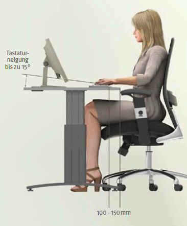
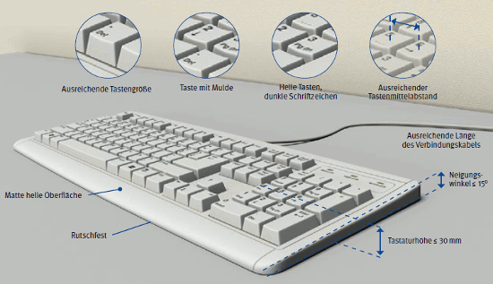

| Anhang der Arbeitsstättenverordnung Nr. 6.3 Ziffer 2 |
|
| (2) | Tastaturen müssen die folgenden Eigenschaften aufweisen:
|
Die Tastatur muss also als eine vom Bildschirm getrennte Einheit, den jeweiligen Arbeitsbedürfnissen entsprechend, umgestellt oder verschoben werden können.
Als Tastaturen am Bildschirmarbeitsplatz kommen Volltastaturen mit alphanumerischem Bereich, numerischem Bereich, Editierbereich und Funktionsbereich infrage, wenn Texteingaben, numerische Eingaben und das Editieren von Daten notwendig sind. Sind nur wenige numerische Eingaben notwendig oder steht die Mausbedienung im Vordergrund, können auch Kompakttastaturen ohne numerischen Bereich eingesetzt werden (Abbildung 21). Dies erlaubt eine entspannte und neutrale Körperhaltung, wenn die Maus mit der rechten Hand bedient wird, da ein Auswärtsdrehen des Armes, der die Maus bedient, entfällt.
|
||||
Abb. 21
a) Position einer Volltastatur;
b) Position einer Kompakttastatur mit besserer Erreichbarkeit der Fläche für die Mausbedienung
Um eine ergonomisch günstige Arbeitshaltung einnehmen zu können, sollte die Tastatur im nicht höhenverstellten Zustand eine Neigung zwischen 0° und 12° und eine Bauhöhe (in der mittleren Tastaturreihe) von höchstens 30 mm haben. Im höhenverstellten Zustand (Tastaturfüße ausgeklappt) darf der Neigungswinkel der Tastatur maximal 15° betragen.
Weitere Literatur
|
Die geringe Neigung und Bauhöhe der Tastatur ermöglichen es, auf eine zusätzliche Handballenauflage, die bei der Arbeit hinderlich sein kann, zu verzichten. Die Trennung der Tastatur vom Bildschirm macht eine individuelle Zuordnung der einzelnen Arbeitsmittel möglich, bei der die Fläche vor der Tastatur, vorzugsweise in einer Tiefe von 100 mm bis 150 mm, zum Auflegen von Händen und Armen genutzt werden kann (Abbildung 22). Auch für die Maus sowie eventuelle weitere Eingabemittel ist ein ausreichender Platz vorzusehen.

Abb. 22 Anordnung der Tastatur auf der Arbeitsfläche
In Einzelfällen, bei Beschäftigten mit akuten oder chronischen Erkrankungen, können Beschwerden und Beeinträchtigungen bei der Benutzung von herkömmlichen Eingabemitteln auftreten. In diesen Fällen kann der Einsatz alternativer Eingabemittel sinnvoll sein.
Es sollten nur Tastaturen mit hellen Tasten und dunkler Beschriftung (Positivdarstellung) eingesetzt werden. Bei Tastaturen mit dunklen Tasten und heller Beschriftung (Negativdarstellung) können bei längerer Benutzung die Tasten – zum Beispiel durch den Fingerschweiß – störend glänzen. Außerdem passt die Positivdarstellung auf der Tastatur dann besser zur Positivdarstellung auf dem Bildschirm und störende Helligkeitsunterschiede werden vermieden.
Eine ergonomische Bedienung der Tastatur ist gegeben, wenn eine sichere Rückmeldung der Tastenbetätigung für den Benutzer sowie ein schnelles Auffinden der jeweiligen Taste und eine gute Fingerführung gewährleistet sind (Abbildung 23).
 |
Abb. 23 Anforderungen an Tastaturen
Dies erfordert:
Eine deutliche und gut lesbare Tastaturbeschriftung ist gegeben, wenn
Weitere Literatur
|